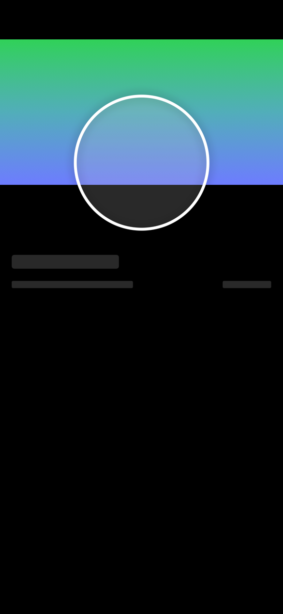

Snapshot tests from your SwiftUI previews.
Prefire reads #Preview and generates snapshot tests, a Playbook catalog and PNG renders your AI agent can look at. You don't write a line of test code.
brew install barredewe/prefire/prefire46struct TestView_Previews: PreviewProvider, PrefireProvider { 47 static var previews: some View { 48 TestView(isLoading: false) 49 .previewUserStory(.testStory) 50 .snapshot(delay: 0.5, precision: 0.7) 51 52 TestView(isLoading: true)53 .previewUserStory(.testStory)54 .previewState(.loading)55 } 56}


Rendered by prefire render from the example project. Snapshot tests compare these images on every run.
// TestViewTests.generated.swift, written by PrefireTestsPlugin @MainActor class TestViewTests: XCTestCase { private let session = PrefireSnapshotSession( simulatorDevice: "iPhone18,1", osVersion: 26, devices: ["iPhone 15", "iPad"], waitDefaults: SnapshotWaitDefaults() ) func test_testView() { assertSnapshots(of: TestView_Previews._allPreviews) } }
Regenerated on every build. Nothing to commit or keep in sync.

The same previews as a browsable catalog inside your app, grouped by user story.
Any preview, any device, from the terminal.
Prefire builds the app once and writes every preview you ask for as a PNG with a JSON record. No Xcode window, works on CI.
$ prefire render TestView_Previews --device "iPhone 16 Pro" --color-scheme dark ✅ test_testView()-iPhone 16 Pro (iPhone 16 Pro): .prefire/render/test_testView__-iPhone_16_Pro.png ✅ test_testView()-iPhone 16 Pro (iPhone 16 Pro): .prefire/render/test_testView__-iPhone_16_Pro-2.png ✅ test_testView()-iPhone 16 Pro (iPhone 16 Pro): .prefire/render/test_testView__-iPhone_16_Pro-3.png Manifest: .prefire/render/manifest.json
- --device
- iPhone or iPad to render on, with its real safe area. Repeatable.
- --color-scheme
- light, dark
- --dynamic-type
- xSmall … accessibility5
- --list
- Previews with their file and line, as JSON.
- prefire board
- An HTML board of the last render, grouped by user story.
Your agent sees the UI it just changed.
Claude Code, Cursor and Codex call Prefire over MCP, get the PNGs back in the conversation and check the layout before they call the task done.
claude mcp add prefire -- prefire mcp
Or install the plugin with a skill that tells Claude when to render: /plugin marketplace add BarredEwe/Prefire, then /plugin install prefire@prefire.
{ "command": "prefire", "args": ["mcp"] }Add to Cursor in one click, or paste the config above into MCP settings.
codex mcp add prefire -- prefire mcp
code --add-mcp '{"name":"prefire","command":"prefire","args":["mcp"]}'| list_previews | Previews of the project with file and line. |
|---|---|
| render_previews | Builds and returns PNGs for the devices, color scheme and Dynamic Type asked for. |
| build_board | HTML board of the last render. |
Needs render_configuration in .prefire.yml. Setup in the AI guide.
render_previews( previews: ["AuthView_Preview"], devices: ["iPhone 16 Pro", "iPad"], color_scheme: "dark" )


Details.
Everything else is in the README and the configuration reference.
- Previews
#Preview,@Previewable,PreviewProvider, parameterized previews- UIKit, AppKit
UIView,UIViewController,NSView,NSViewController- Snapshot tests
- iOS, tvOS, macOS
- Playbook
- iOS
- Comparison
- swift-snapshot-testing
- Async views
.snapshot(waitForIdle: true),.snapshot(waitUntil:)- Flows and states
.previewUserStory(),.previewState()- Caching
- Parsed types and preview bodies, keyed by SHA-256
- Runs in
- Xcode build phase, SwiftPM plugin, CLI, CI
- Output
- Stencil templates you can replace
- Requires
- Swift 6, Xcode 16, iOS 14+, macOS 13+
- License
- Apache 2.0
Install.
Pick one. Fine-tune with .prefire.yml later, the defaults work without it.
Swift Package Manager
Add the plugin to the snapshot test target.
.package(
url: "https://github.com/BarredEwe/Prefire.git",
from: "6.4.0"
)
.testTarget(
plugins: [
.plugin(name: "PrefireTestsPlugin", package: "Prefire")
]
)
Xcode
Add the package, then the plugins in the target's Build Phases.
// test target PrefireTestsPlugin // app target, for Playbook PrefirePlaybookPlugin
Homebrew
The CLI: tests, Playbook, render and the MCP server.
brew install barredewe/prefire/prefire prefire tests prefire render --list
Mint
The same CLI through Mint. Beta.
mint install BarredEwe/Prefire